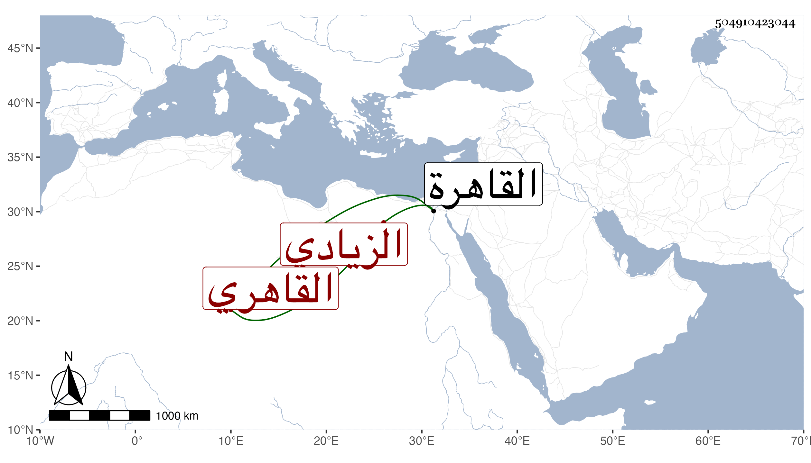

0902Sakhawi.DawLamic.ITO20230111-ara1.EIS1600.504910423044
Biography ID: 504910423044
505
عزيزة ابنة علي بن أحمد الزيادي بالتشديد القاهري أخت محمد وأحمد الماضيين . ولدت تقريبا سنة ست وأربعين وثمانمائة وتزوج بها العلاء بن السيد عفيف الدين بالقاهرة بأخرة بعد غيره وسافرت بعده لآجله مع أخويها فجاورت معهما وما حصل الغرض لاطلاع ابنه عمه وعدم قدرته على غضبها بل كان سببا لفراقها ثم عادت اليه بعد حتى مات وهي في عصمته ثم ماتت هي في شوال سنة تسع وسبعين رحمها الله .
